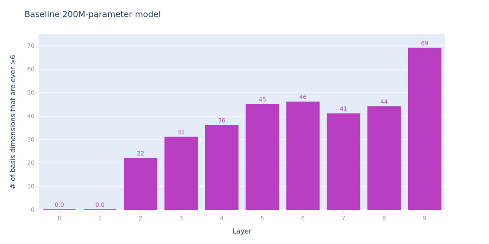
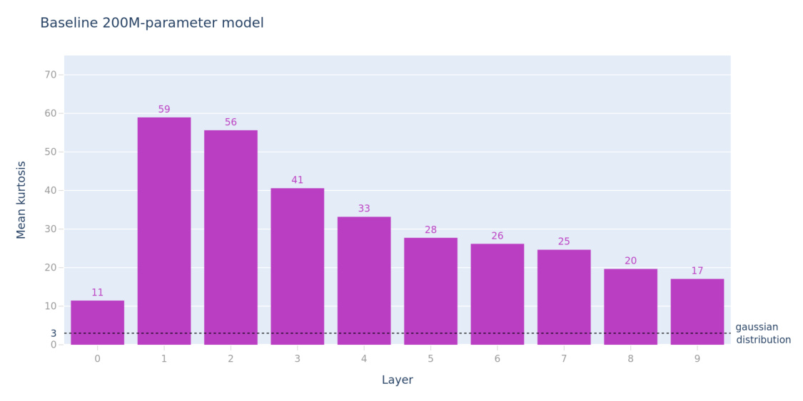
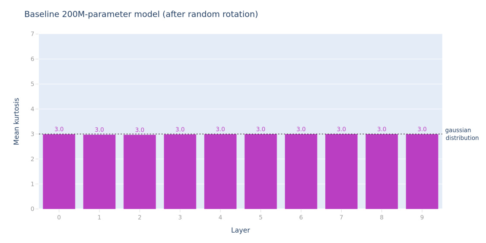
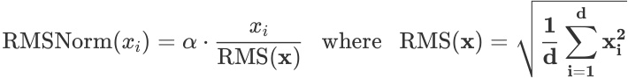
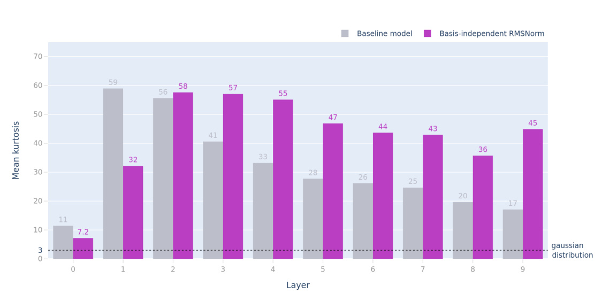
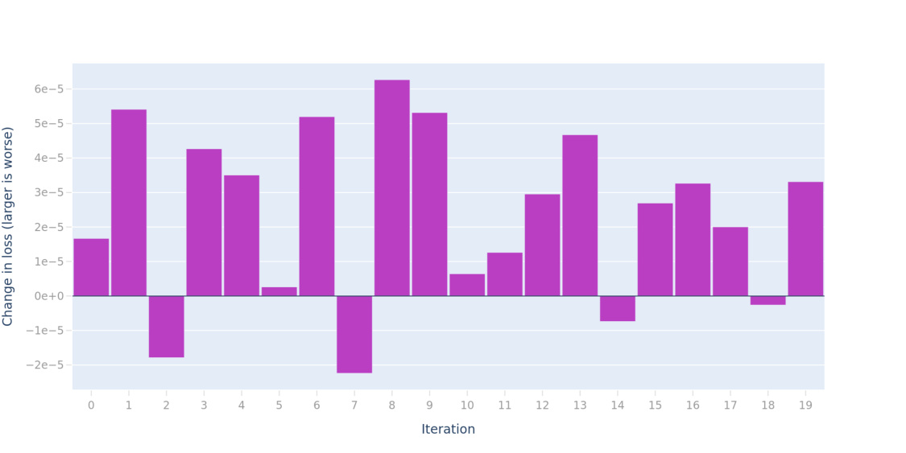
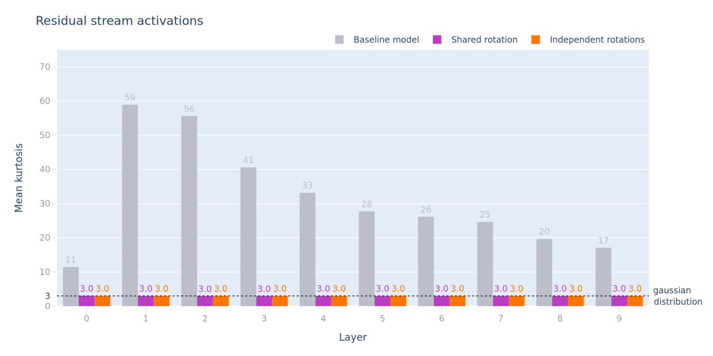
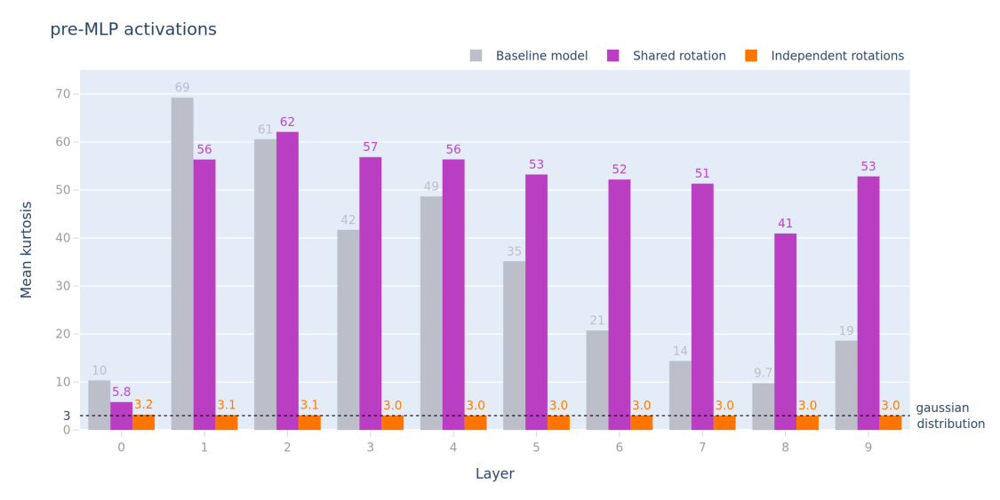
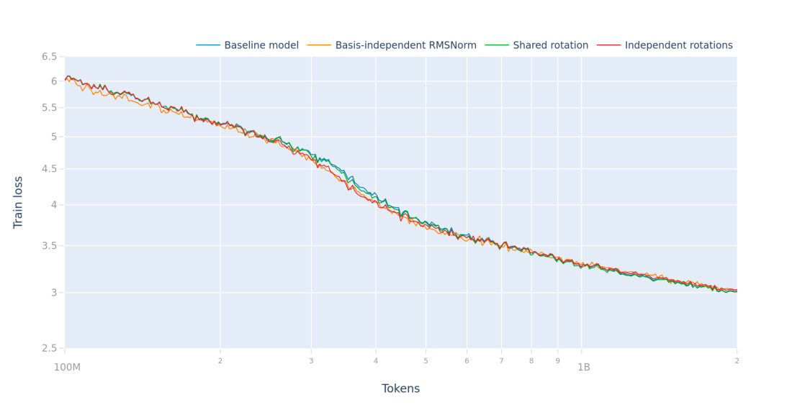

Privileged Bases in the Transformer Residual Stream
AUTHORS
Nelson Elhage ∗ , Robert Lasenby, Christopher Olah‡
AFFILIATION
Anthropic
- Core Research Contributor; ‡ Correspondence to colah@anthropic.com; Author contributions statement below.
PUBLISHED
March 16, 2023
Abstract
Our mathematical theories of the Transformer architecture suggest that individual coordinates in the residual stream should have no special significance (that is, the basis directions should be in some sense "arbitrary" and no more likely to encode information than random directions). Recent work has shown that this observation is false in practice. We investigate this phenomenon and provisionally conclude that the per-dimension normalizers in the Adam optimizer are to blame for the effect.
We explore two other obvious sources of basis dependency in a Transformer: Layer normalization, and finiteprecision floating-point calculations. We confidently rule these out as being the source of the observed basisalignment.
The longer story
Tim Dettmers recently released a set of results and code exploring what he calls “emergent outliers” in Transformer models: the phenomenon that in large Transformers, certain coordinates in the residual stream have very large outlier values, ranging up to 20× larger than any other coordinate.
The obvious interpretability question posed by this work is:
What are these features? What do they represent, or what purpose do they serve?
However, there’s a second question, only obvious with a bit of a deeper mathematical model for Transformers:
Why are these features basis-aligned?
We generally consider the residual stream to have “no privileged basis”. By this we mean that there is no reason to expect the individual coordinates in the stream to have any particular meaning or significant property at all. This belief arises from the observation that every operation that reads from or writes to the residual stream does so via an arbitrary full-rank linear transformation. That in turn implies that we could transform the residual stream by an arbitrary full-rank linear transformation, and then also multiply the same transformation into every other matrix in the Transformer in the appropriate way, and arrive at an identical function with completely different coordinates.
Under the assumption that the model chooses an arbitrary basis for the residual stream, we expect large features to get "spread out" across many basis coordinates – in expectation, they will contribute something like 1/ d of their magnitude to each coordinate.
Thus, when we observe the consistent presence of extreme values in some residual stream dimensions, it suggests that something in the model or its training process is breaking the symmetry! What is it?
The experiments
First, we’ll demonstrate the behavior on a 200 million parameter model using Anthropic’s codebase. Dettmers observes outliers at this scale but suggests that they appear inconsistently until larger models; we find that they are sufficiently frequent for our experiments, allowing us to experiment on comparatively small models.
MEASURING OUTLIERS
To demonstrate that we're seeing a similar phenomenon to Dettmers, we will explore our model using his initial definition: let an “outlier” be a single scalar value in the residual stream whose absolute value is >6 (we have verified that for our models this threshold picks out the extreme tails, and we see qualitatively similar results for a wide range of threshold values). We can then plot the number of residual-stream activations which ever exhibit outliers, as a function of model layer, over a (128 sequences × 1024 tokens) test batch:

We see them grow over the course of the model, with a typical layer exhibiting 20–60 outlier dimensions (out of a total d_model=1280 hidden dimensions in this model).
ACTIVATION KURTOSIS
While these (partially) basis-aligned outliers were our first hint that something odd is happening, we'd like to find a more-general metric for detecting the presence of a privileged basis, one which – among other characteristics – doesn't require tuning an arbitrary threshold.
We claim that if you treat an activation vector for a single token as independent samples from a probability distribution, that distribution should have a kurtosis of 3 if the model is not in a privileged basis.1 An argument for why this is the case follows.
If we believe that a representation doesn’t have a privileged basis, then we expect that each feature is represented by a random direction. What properties does a random direction in a high-dimensional space have? It turns out there’s a standard trick for sampling a random unit vector. One samples from an isotropic Gaussian, and then scales the resulting vector to have unit norm. Note that this doesn’t work for most distributions – the key thing is that isotropic Gaussians are invariant to any orthonormal change of basis. All of this means that we can think of a random direction as (up to a rescaling) a vector of independent samples from a Gaussian. Note that this isn’t saying that the distribution of points on a n-sphere as a whole is Gaussian, only that any given point on the n-sphere can be understood as a scaled sequence of samples from some Gaussian.
If every feature is represented this way, the components of the resulting activation vector should be Gaussianly distributed. This is because the activation vector will be the sum of the distributions over basis directions corresponding to each feature. Scaling a Gaussian produces a Gaussian, and adding Gaussian variables also produces a Gaussian. At this point, we could characterize “Gaussianness” in a number of ways, but we chose to focus on the kurtosis. The kurtosis is a measure of tailedness; a Gaussian distribution has Kurtosis 3; any larger value indicates heavy tails. So in expectation, the kurtosis of these "Gaussian samples" should be three. To accurately estimate this expectation, we compute the kurtosis for the activations for many tokens and take the mean.
Plotting this metric across layers shows that our distribution is wildly non-Gaussian (and thus in a non-arbitrary basis):

By way of illustration and to confirm our metric's behavior, we can look at the same residual stream values after we apply a fixed random rotation (equivalently, looking at them in some other randomly-chosen orthonormal basis). If we take the same kurtosis metric of the resulting activations, we find values almost exactly equal to 3, as predicted.

Hypotheses for the basis-alignment
LAYERNORM
The one notable basis-dependent operation in a standard Transformer’s forwards pass is LayerNorm. LayerNorm has two potential basis dependencies:
-
It subtracts off the mean, which is equivalent to taking a dot product with d model1 (1, 1, 1, … )
-
It has a per-channel learned weight. Applying this weight is still a linear operation, but it is learned and applied in the standard basis, so conceivably it somehow privileges that basis.
In order to test this hypothesis, we modify LayerNorm to remove the basis dependency. The resulting operation looks similar to RMSNorm, which is sometimes also used for Transformer training. We can view our modified normalization as “LayerNorm, but we don’t subtract the mean, and use a single learnable scale parameter.” That is:

This operation is identical in any orthonormal basis.
We find that models with this normalization strategy performed identically to the baseline LayerNorm for our training setup. Does it fix the basis dependency?

The results are broadly similar to the reference model, and, if anything, even more heavy-tailed. From this, we conclude that the (admittedly small) basis-dependence in standard LayerNorm is not causing our outliers.
FINITE-PRECISION
Neel Nanda and Alex Silverstein have speculated that the basis preference comes from using finite precision (typically 16- or 32-bit) floating point in Transformer implementation. The hypothesis, as we understand it, is that when mixing features of different magnitudes, it’s desirable to put them into different coordinates, because floating-point numbers lose precision quickly when summing numbers across different scales.
VERIFYING THE MODEL IS BASIS-INDEPENDENT
With our modified RMSNorm, our model should now be completely rotation-invariant, so we can test the floating-point precision hypothesis, at least on the forwards pass, by actually rotating the model!
We generate a random orthonormal matrix R , and then we multiply every matrix in the model by either R (if the matrix is reading from the residual stream) or R⊺ (if the matrix is writing to the residual stream).

Random rotations do tend to hurt on average, but the numbers are absolutely tiny (for scale, the baseline model has a test loss of about 3.02 nats) and we see much larger noise from e.g. different random seeds at model initialization.
From this, we conclude that this model is genuinely rotation-invariant, and that this fact holds even when accounting for floating-point error.
Optimizing in an arbitrary basis
The previous experiment essentially rules out a subtle dependence on details of floating-point precision during the Transformer's forward pass. However, there remains a possibility that the model gradients during training (whose coordinates can also span many orders of magnitude) interact with floating-point precision in some way, and that this interaction leads to the privileging of the standard basis.
In order to explore this possibility, we train a Transformer using a similar rotation operation during training.
In particular, we can generate fixed random rotation matrices at initialization, and multiply them into the activations any time we read from or write to the residual stream. Because we’re doing this immediately before/after a full-rank multiplication, this has no effect on the class of functions expressible by the Transformer, but it does decouple the bases used at different points during model computation.
We train two models in this way, with two variations:
A "Shared rotation" model, in which we fix a single random rotation, and apply it (or its transpose) every time we read (write) from (to) the residual stream. This is a similar setup to the forwards-pass experiments, except that here we rotate the activations, instead of the parameter matrices. In this model, we essentially decouple the residual stream basis from the computation basis; All computation (attention and the MLP layers) happens inside a single shared basis; but information is passed through a different basis along the residual stream.
An "Independent rotations" model, in which every read from or write to the residual stream has a different random rotation. In this model, every computational layer happens in its own basis, unrelated to any other layer or the residual stream.
We find that both models perform essentially identically to the baseline model (we include loss curves at the end of this document).
From this, we conclude that Transformers do not rely on a privileged basis to train and function properly, even when floating-point precision is taken into account. Some dynamic of the training process does privilege the standard basis, but that effect seems to be a side effect more than it is necessary.
We take this observation alone as moderate evidence against the "floating-point precision" hypothesis; we expect that in most worlds where the standard basis mattered for floating-point-precision reasons, we would see a substantial performance hit from forcing the model to operate in multiple unrelated bases.
However, we can now investigate these models a bit further using our kurtosis metric. As we would expect, both models have activations with kurtosis almost exactly equal to 3:

In addition, we can also look at the activations post-rotation, immediately before they are fed into the MLP upprojection. For the "Independent rotations" model, each layer happens in a different basis and so we don't necessarily expect to see anything unusual. For the "Shared rotation," however, this lets us look at the "computation basis," where the model's computation happens, which we've now separated from the residual stream basis which is used for communication between layers.

The "Shared rotation" model looks very similar to the baseline model, in terms of the heaviness of its tails, inside the computation basis.
From this, we conclude that the basis-alignment is an artifact of the computation inside of the Transformer layers, more so than from the representation in the residual stream. We believe this is strong evidence against the floating-point precision hypothesis.
Interestingly, while the "Independent rotations" model shows some small tails, especially in early layers, the effect is very small. This suggests that the basis-alignment somehow emerges from all of the layers operating in the same basis, and "colluding" to establish the outliers; a single layer can have a small effect but the main effect comes when we combine all the layers.
Conclusion
We find these experiments to be fairly compelling evidence that numerical precision is not the driving factor for the weird outliers we see. The case is not completely airtight, but we find it strong.
When we train a Transformer with a different basis for the residual stream and for the computation inside of each layer, we observe heavy-tailed activations inside the computation basis, but not in the residual stream.
The Adam optimizer tracks moments and normalizes the gradient update in a pointwise manner, and thus privileges the basis that the weights are stored in, as compared to arbitrary directions in parameter space. After ruling out the other effects in this paper, it remains the strongest basis-dependent operation we're aware of in the Transformer model, and thus these experiments push in the direction of suspecting the optimizer is responsible for the approximate basis-alignment of the outliers.
That said, we cannot claim to have conclusively put the blame on Adam; it's conceivable there is an additional, as-yet-unidentified, mechanism at play. There are a few other experiments we could carry out to further cement this hypothesis, which we decided not to pursue, but which could be natural followup experiments:
-
We could attempt to train a Transformer entirely using SGD or some other optimizer without a basisdependence. Our intuition is that while tuning learning rates would be a challenge, small models could potentially be trained successfully using a very low learning rate and many steps.
-
One could train a model using Adam, but store the Adam moments in a different basis from the weights and computation. This would be a similar experiment to our "computing in a random basis" experiments but would further isolate Adam.
Loss curves
Here are the training loss curves for the models described in this document:

We see a slight variation early in training between the models, but within a billion tokens or so they converge to what we believe is within noise.
Author Contributions
Basic Results and Experiments – Nelson Elhage designed and performed the experiments, including implementing and training the Transformer variations.
Analysis and Theory – Nelson Elhage suggested that kurtosis might provide a fruitful measure for basis-independence. Chris Olah did the theoretical work to justify and select the particular formulation we arrived at.
Writing – The paper was primarily drafted by Nelson Elhage, with some sections drafted by Chris Olah. Robert Lasenby contributed to editing and provided helpful comments.
Illustrations – Shan Carter designed the illustrations in the paper with assistance from Nelson Elhage and Chris Olah.
Footnotes
- Note that a kurtosis >3 implies a privileged basis, but a kurtosis of 3 won’t necessarily imply an unprivileged basis. It could also occur if the activations of features themselves were Gaussian. However, we often have the intuition that many features are sparse, in which case this would not be true. [ ↩ ]